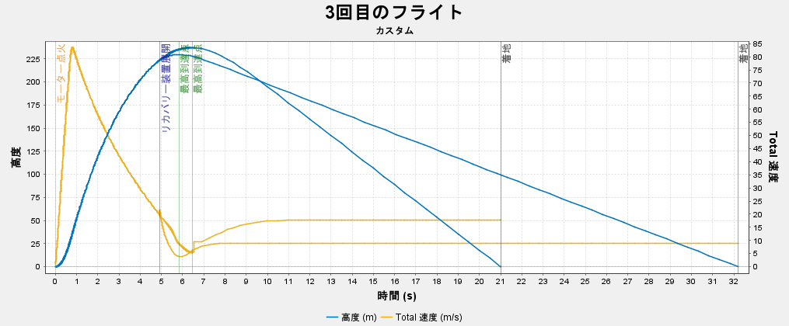
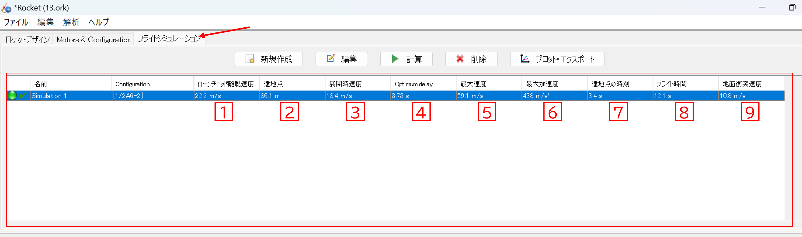

ロケットの設計ソフト「OpenRocket」
最終更新：2025/7/29 投稿：2025/4/13
モデルロケットを作るにあたって、最初に行うべきことはロケットの設計です。
どんなに優れたロケットでも、重心やバランスが悪いとまっすぐに飛ばすことはできません。
ロケット設計は制作の中で非常に重要なポイントです。今回は、ロケット設計に役立つソフトウェア「OpenRocket」を紹介します。
0 OpenRocketとは？
OpenRocketは、モデルロケットを設計、シミュレーションすることができるフリーソフトウェアです。パソコンがあれば誰でも、簡単に、無料で、ロケットを設計することができます。
1 インストール手順
1. ブラウザで「OpenRocket」と検索するか、ここからダウンロードページにアクセスしてください。2. ダウンロードページで、青いボタンをクリックしてインストールファイルをダウンロードします。
3. ダウンロード出来たら、ダウンロードファイルにある『OpenRocket-Windows.exe』をダブルクリックして開く。
4. すると、下のようなインストールウィンドウが出てくるので特に問題がなければ「Next」をクリックします。

2 メイン画面
OpenRocketを起動するとこのような画面になります。これがOpenRocketのメイン画面になります。① 「ロケットデザイン」でロケットの設計に関する編集をすることができます。
② 「Motor&Configuration」でエンジンに関する編集をすることができます。
③ 「フライトシミュレーション」でロケットの打ち上げのシミュレーションを行うことができます。
④ ロケットの部品を追加・編集して、ロケットの設計をします。
⑤ 機体の外観が表示されます。ロケットの情報(全長や重量、最大高度など)を確認できます。
3 初期設定
OpenRcketを使いやすくするために初期設定を整えましょう。画面上部のタブから「編集」ボタンをクリックして、一番下の「設定」を開きます。
もし言語設定が日本語以外になっている場合、オプションから「日本語」を選びましょう。

使いやすい単位に自分でカスタマイズすることができます。cmよりmmのほうが便利だったりするので、お好みで設定しましょう。
また、ロケット甲子園では目標高度がフィート（ft）単位で設定されているので、単位をftにしておくと換算の手間が省けて便利です。
発射地点の環境条件や発射台の角度も設定できるので、より精度の高いシミュレーションが可能になります。
4 使い方
4.1 部品を追加して形を作る
では実際にOpenRocketを使ってロケットを設計してみましょう。まずはノーズコーンを追加してみます。ノーズコーンの追加ボタンをクリックします。
すると、このようなポップアップが出てきますが、気にせず閉じてしまって大丈夫です。

ノーズコーンを追加出来たら、同じようにボディーチューブを追加してみましょう。
次はフィンを追加します。今回は台形フィンを使ってみます。(ほかにも楕円形や自由形、チューブ形などの形状があります。)
ボディーチューブを選択した状態で台形フィンをクリックします。
ここまでくるとロケットらしい形になってきたと思います。
4.2 エンジン
ロケットが出来上がったらエンジンを装填してみましょう。まず、エンジンを装填するための「インナーチューブ」を追加します。ボディーチューブを選択して、インナーチューブのボタンをクリックします。
インナーチューブを追加出来たら上のタブから「Motor&Configuration」に移動します。モーターマウントからインナーチューブのチェックボックスを選択し、新しいモーターをクリックします。

1⃣エンジンの名前からエンジンを検索できます。使うエンジンが決まっている場合はここから検索して探しましょう。
2⃣エンジンのメーカーでエンジンを絞ることができます。A~C型エンジンならEstesが多いと思います。
3⃣トータルインパルスでエンジンを絞ることができます。どれくらいの大きさのロケットを作るかは決めているけど、どのエンジンを使うかは詳しく決まっていないときはエンジンの推力で候補を絞っていろいろなエンジンを見てみるといいです。
4⃣エンジンの長さや直径からエンジンを探すことができます。
目当てのエンジンが見つかったらOKを押しましょう。
今回は全国大会の機体を想定して作るので1/2A6エンジンにします。
こんな感じでモーターコンフィギュレーションに装填したエンジンが表示され、画面左下に最大高度や最大速度がでていたら大丈夫です。
4.3 設計をより緻密にしていく
エンジンを装備したことで、最大高度や最大速度が表示されるようになりました。しかし、まだパラシュートやエンジンブロックなどの必要な部品が欠けているため、ロケットをより完成に近づけるために設計をさらに緻密にしていきましょう。すでに追加された部品を編集するには、編集したい部品を選択して、画面真ん中の編集ボタンを押します。
「Plaoment」で部品の位置を変えられます。前に移動したり後ろに移動したりできます。
ノーズコーンにはさまざまな形状があります。
OpenRocketでは、部品の体積と密度を元に自動で質量を計算してくれます。
部品材料を変更して、設計値と実際の部品の重さができるだけ一致するように調整しましょう。
部品材料を「カスタム」にすれば、部品の密度を0.001g単位で自由に変更できます。
また、部品の重さを任意の値に設定することも可能です。「再定義」ボタンを押し、「質量の再定義」にチェックを入れると、部品の重さを自由に変更できます。
密度で質量を計算するよりも実際の重さを測り、それに基づいて再定義した方が正確で誤差が生じにくいため、すべての部品の重さを再定義することをお勧めします。
設計に忠実にロケットを作ることは重要ですが、どうしても実際に作ってみたロケットの重さと設計の値には誤差が生まれてしまいます。
そんなときは実際のロケットに合わせて設計を修正していく必要があります。
4.4 安定性の調節
ロケットが安定してまっすぐ飛ぶためには重心(CG)が圧力中心(CP)より前にある必要があります。この重心(CG)と圧力中心(CP)の位置の調節がロケットの設計において最も重要なポイントです。
安定性とはロケットの重心と圧力中心の距離を表す指標です。
一般的には安定性は1.0前後がよいとされています。ここで注意したいのは、安定性は高いほどロケットが安定して飛ぶというわけではないことです。安定性は高すぎても低すぎてもロケットはまっすぐ飛びません。
この安定性が1.0になるように設計を調節していきます。
この設計では安定性が-0.309なのでこのままでは墜落していまいます。
安定性を上げるには、
①重心を前にする
②圧力中心を後ろに下げる
この2つの方法があります。
➀重心を前にする
重心を前にするには、先端のノーズコーンにおもりを積んでロケットの前側を重くするか、後ろの部品を軽くする方法があります。逆に、重心を後ろに下げて安定性を下げる場合は、エンジンを後方に移動させるなどの方法があります。
②圧力中心を後ろに下げる
圧力中心を下げるには、フィンの形を変えましょう。
基本的には、フィンを大きくすると圧力中心は後ろに移動し、フィンを後退させることで圧力中心がさらに後ろに位置します。
また、フィンの枚数を増やすと圧力中心は後ろにいきます。
フィンの枚数は3枚以上にすることを推奨します。3枚より少ないと、空気の当たり方が均等でなかったり不安定になってしまいます。
ノーズコーンにおもりをつみ、フィンを後退させて安定性を0.96まで上げました。
最大高度は86m、最大速度は59.1m/sとなっています。
いい感じですね。
4.5 ファイルを出力する
1 名前を付けて保存設計が完成したら設計ファイルを保存しましょう。
「ファイル」から「名前を付けて保存」を選択し、名前をつけて好きな場所に保存します。
2 Export as
「Export as」から設計ファイルをほかの形式で出力することもできます。
OpenRocketとは別のロケット設計ソフトのRASAeroやRockSimに対応した設計ファイルに変換して出力できます。
また、3Dプリンター用にobjファイルで出力することもできます。
3 印刷/PDFにエクスポート
「印刷/PDFにエクスポート」でロケットの設計図を作ることができます。紙に印刷してロケットを作るときに活用しましょう。

5 シミュレーション
ロケットの設計が出来上がったら打ち上げのシミュレーションをしてみましょう。赤枠の部分に打ち上げのシミュレーション結果が表示されます。
1⃣ローンチロッド離脱速度…ロケットがローンチロッド(発射台のレール)から離れる時の速度。離脱速度が遅すぎると離脱直後に風に影響されて飛行が不安定になることがある。
2⃣遠地点…ロケットの最大高度
3⃣展開時速度…パラシュート(ストリーマー)が展開するときのロケットの速度
4⃣Optimum delay…理想的なエンジンの延時時間。エンジンがこの延時時間のとき、ロケットは最高高度で回収機構を展開できる。
5⃣最大速度…打ち上げの最高速度。
6⃣最大加速度…打ち上げでかかる最大の加速度。
7⃣遠地点の時刻…ロケットが最高高度に達したときの時間。
8⃣フライト時間…エンジンに点火してから地面に着陸するまでの時間。
9⃣地面衝突速度…地面に着陸するときの速度。

OpenRocketではシムレーション結果をグラフにすることができます。「プロット・エクスポート」をクリックするとこのようなウィンドウが出てくるので、グラフにしたいもの(高度や速度、推力、抗力係数など)を指定して「Plot」を押すとこのようなグラフが出来上がります。
条件を変えて違うシミュレーションをしたいときは、新規作成を押すと、エンジンや細かい条件を変えて新しいシミュレーションを作ることができます。